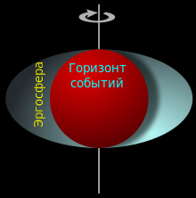
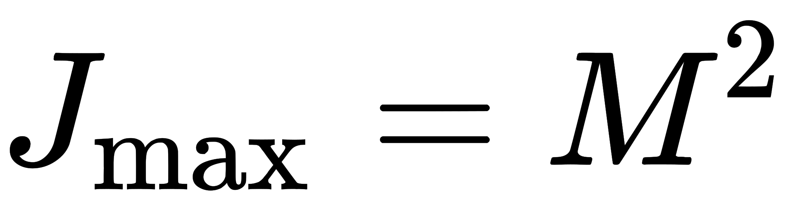
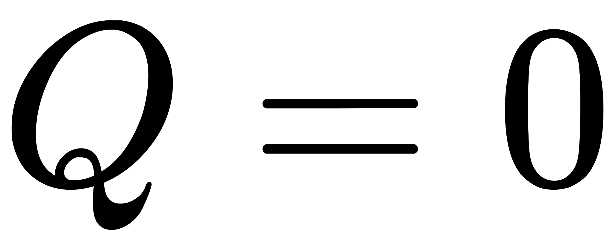
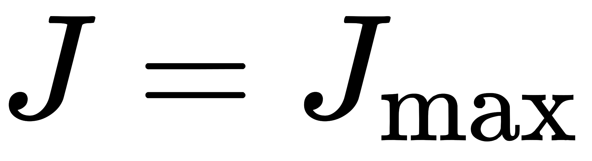
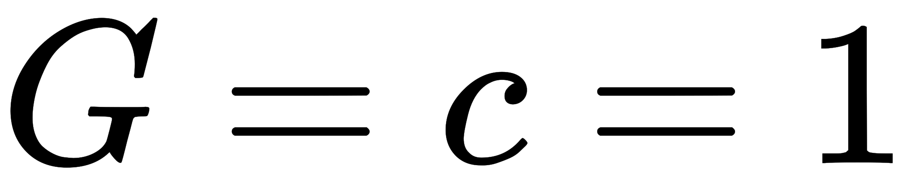
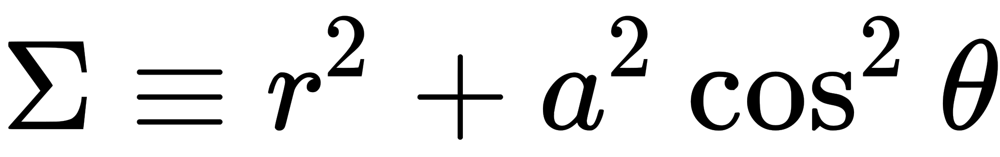
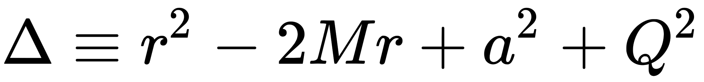
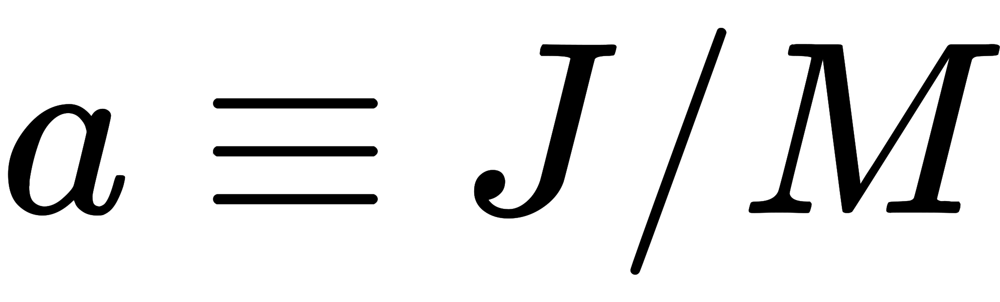
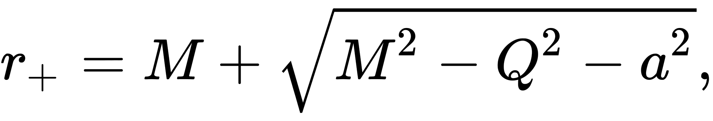
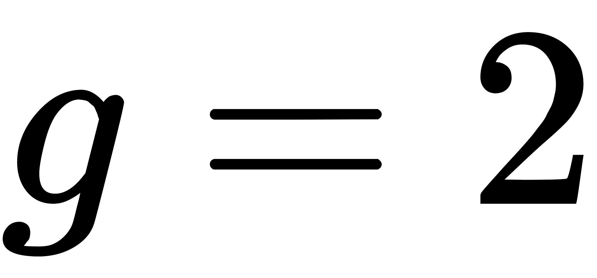

Решение уравнений Эйнштейна
Так как чёрные дыры являются локальными и относительно компактными образованиями, то при построении их теории обычно пренебрегают наличием космологической постоянной, так как её эффекты для таких характерных размеров задачи неизмеримо малы. Тогда стационарные решения для чёрных дыр в рамках ОТО, дополненной известными материальными полями, характеризуются только тремя параметрами: массой (M), моментом импульса (L) и электрическим зарядом (Q), которые складываются из соответствующих характеристик вошедших в чёрную дыру при коллапсе и упавших в неё позднее тел и излучений (если в природе существуют магнитные монополи, то чёрные дыры могут иметь также магнитный заряд (G), но пока подобные частицы не обнаружены). Любая чёрная дыра стремится в отсутствие внешних воздействий стать стационарной, что было доказано усилиями многих физиков-теоретиков, из которых особо следует отметить вклад нобелевского лауреата Субраманьяна Чандрасекара, перу которого принадлежит фундаментальная для этого направления монография «Математическая теория чёрных дыр». Более того, представляется, что никаких других характеристик, кроме этих трёх, у не возмущаемой снаружи чёрной дыры быть не может, что формулируется в образной фразе Уилера: «Чёрные дыры не имеют волос».
Решения уравнений Эйнштейна для чёрных дыр с соответствующими характеристиками:
| Характеристика ЧД | Без вращения | Вращается |
| Без заряда | Решение Шварцшильда | Решение Керра |
| Заряженная | Решение Рейснера — Нордстрёма | Решение Керра — Ньюмена |
- Решение Шварцшильда (1916 год, Карл Шварцшильд) — статичное решение для сферически-симметричной чёрной дыры без вращения и без электрического заряда.
- Решение Рейснера — Нордстрёма (1916 год, Ганс Рейснер и 1918 год, Гуннар Нордстрём) — статичное решение сферически-симметричной чёрной дыры с зарядом, но без вращения.
- Решение Керра (1963 год, Рой Керр) — стационарное, осесимметричное решение для вращающейся чёрной дыры, но без заряда.
- Решение Керра — Ньюмена (1965 год, Э. Т. Ньюмен (англ.), Э. Кауч, К. Чиннапаред, Э. Экстон, Э. Пракаш и Р. Торренс) — наиболее полное на данный момент решение: стационарное и осесимметричное, зависит от всех трёх параметров.
Решение для вращающейся чёрной дыры чрезвычайно сложно. Его вывод был описан Керром в 1963 году очень кратко, и лишь спустя год детали были опубликованы Керром и Шильдом в малоизвестных трудах конференции. Подробное изложение вывода решений Керра и Керра — Ньюмена было опубликовано в 1969 году в известной работе Дебнея, Керра и Шильда. Последовательный вывод решения Керра был также проделан Чандрасекаром более чем на пятнадцать лет позже.
Считается, что наибольшее значение для астрофизики имеет решение Керра, так как заряженные чёрные дыры должны быстро терять заряд, притягивая и поглощая противоположно заряженные ионы и пыль из космического пространства. Существует также гипотеза, связывающая гамма-всплески с процессом взрывной нейтрализации заряженных чёрных дыр путём рождения из вакуума электрон-позитронных пар (Р. Руффини с сотрудниками), но она оспаривается рядом учёных.
Решение Керра
 Чёрная дыра Керра обладает рядом замечательных свойств. Вокруг горизонта событий существует область, называемая эргосферой, внутри которой телам невозможно покоиться относительно удалённых наблюдателей. Они могут только вращаться вокруг чёрной дыры по направлению её вращения. Этот эффект называется «увлечением инерциальной системы отсчёта» (англ. frame-dragging) и наблюдается вокруг любого вращающегося массивного тела, например, вокруг Земли или Солнца, но в гораздо меньшей степени. Однако саму эргосферу ещё можно покинуть, эта область не является захватывающей. Размеры эргосферы зависят от углового момента вращения.
Параметры чёрной дыры не могут быть произвольными. Угловой момент ЧД не должен превышать , что тоже представляет собой частный случай ограничения Керра — Ньюмена, на этот раз для чёрной дыры с нулевым зарядом (, см. ниже). В предельном случае  метрика называется предельным решением Керра.
Это решение также порождает удивительную геометрию пространства-времени при его продолжении за горизонт. Однако требуется анализ устойчивости соответствующей конфигурации, которая может быть нарушена за счёт взаимодействия с квантовыми полями и других эффектов. Для пространства-времени Керра анализ был проведён Субраманьяном Чандрасекаром и другими физиками. Было обнаружено, что керровская чёрная дыра — а точнее её внешняя область — является устойчивой. Аналогично, как частные случаи, оказались устойчивыми шварцшильдовские дыры, а модификация алгоритма позволила доказать устойчивость и Рейснер-нордстрёмовских чёрных дыр. См., раздел Структура вращающихся чёрных дыр далее.
Решение Керра — Ньюмена
Трёхпараметрическое семейство Керра — Ньюмена — наиболее общее решение, соответствующее конечному состоянию равновесия не возмущаемой внешними полями чёрной дыры (согласно теоремам об «отсутствии волос» для известных физических полей). В координатах Бойера — Линдквиста (Boyer — Lindquist) и геометрических единицах  метрика Керра — Ньюмена даётся выражением:
где: , , ,
t — временна́я координата, в секундах,
r — радиальная координата, в метрах,
θ — полярная угловая координата, в радианах,
φ — азимутальная угловая координата, в радианах,
Q — электрический заряд,
J — момент импульса.
Из этой формулы легко вытекает, что горизонт событий находится на радиусе , и, следовательно, параметры чёрной дыры не могут быть произвольными: электрический заряд и угловой момент не могут быть больше значений, соответствующих исчезновению горизонта событий. Должны выполняться следующие ограничения:
Если эти ограничения нарушатся, горизонт событий исчезнет, и решение вместо чёрной дыры будет описывать так называемую «голую сингулярность», но такие объекты, согласно распространённым убеждениям, в реальной Вселенной существовать не должны (согласно пока не доказанному, но правдоподобному принципу космической цензуры). Альтернативно, под горизонтом может находиться источник сколлапсировавшей материи, которая закрывает сингулярность, и поэтому внешнее решение Керра или Керра — Ньюмена должно быть непрерывно состыковано с внутренним решением уравнений Эйнштейна с тензором энергии-импульса этой материи. Как заметил Б. Картер (1968), решение Керра — Ньюмена обладает двойным гиромагнитным отношением , таким же, как у электрона согласно уравнению Дирака.
Метрику Керра — Ньюмена (и просто Керра и Рейснера — Нордстрёма, но не Шварцшильда) можно аналитически продолжить также через горизонт таким образом, чтобы соединить в чёрной дыре бесконечно много «независимых» пространств. Это могут быть как «другие» вселенные, так и удалённые части нашей Вселенной. В таким образом полученных пространствах есть замкнутые времениподобные кривые: путешественник может, в принципе, попасть в своё прошлое, то есть встретиться с самим собой. Вокруг горизонта событий вращающейся заряженной чёрной дыры также существует область, называемая эргосферой, практически эквивалентная эргосфере из решения Керра; находящийся там стационарный наблюдатель обязан вращаться с положительной угловой скоростью (в сторону вращения чёрной дыры).
Теоремы об «отсутствии волос»
Теоремы об «отсутствии волос» у чёрной дыры (англ. No hair theorem) говорят о том, что у стационарной чёрной дыры внешних характеристик, помимо массы, момента импульса и определённых зарядов (специфических для различных материальных полей), быть не может (в том числе и радиуса), и детальная информация о материи будет потеряна (и частично излучена вовне) при коллапсе. Большой вклад в доказательство подобных теорем для различных систем физических полей внесли Брэндон Картер, Вернер Израэль, Роджер Пенроуз, Пётр Хрусьцель (Chruściel), Маркус Хойслер. Сейчас представляется, что данная теорема верна для известных в настоящее время полей, хотя в некоторых экзотических случаях, аналогов которых в природе не обнаружено, она нарушается.